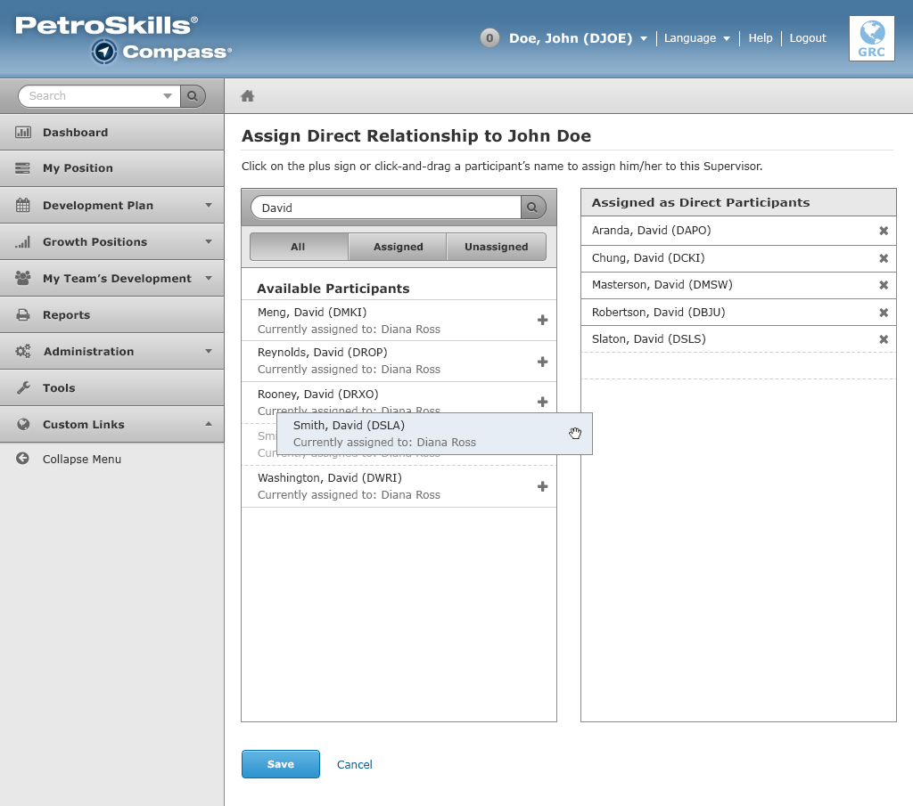

Add/Remove Direct Participant
The Add/Remove Direct Participant UI is divided into two columns.
On the left column, it contains:
- Search Feature – Input control allows the user to search for particiants in the entire system.
- Sort By Assigned Groups – Labeled as "All", "Assigned", and "Unassigned". After the user makes a search, the user can sort their search results by 3 groups.
- Search Results – After a search is initiated, a list of available participants display in the box. Each search result can be clicked and dragged to the other column "Assigned as Direct Participants". Or the user can click on the "+" plus sign, which will add the participant to the other column.
On the right column, it displays the Assigned as Direct Participants. The participants can be removed from this column by clicking on the "X" / delete button.
